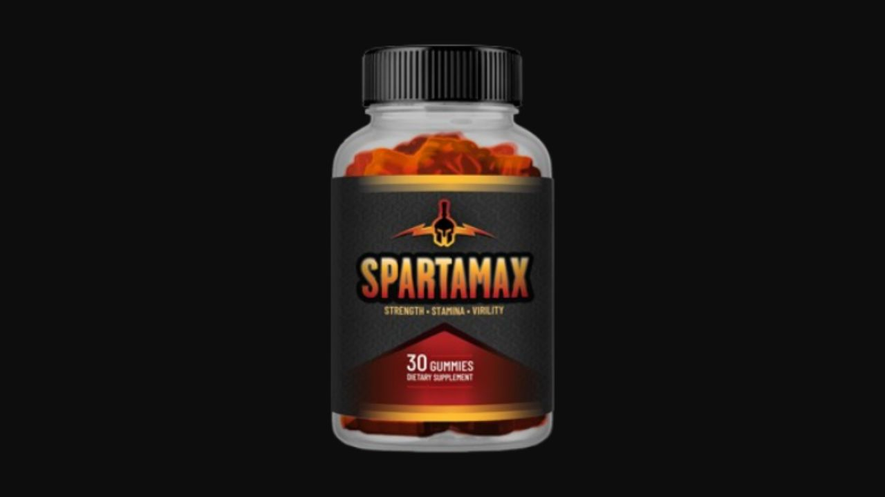

I analyzed all 7 ingredients in this male performance gummy — from Tongkat Ali to Icariin. Here's the honest truth about what the formula does, who it works for, and why 97% of customers choose 6 bottles.
▶ Watch our full SpartaMax video review before buying
SpartaMax combines 7 evidence-backed ingredients that address male performance decline from three angles simultaneously: testosterone support (Tongkat Ali, Ashwagandha), nitric oxide and blood flow (L-Arginine, Beet Root), and natural PDE5 inhibition (Horny Goat Weed). The 365-day guarantee is the most generous I've seen in this category — and signals genuine confidence in the formula. For men over 40 experiencing declining drive, stamina, or bedroom confidence, this formula addresses the physiology directly.
SpartaMax is a male performance supplement in gummy form — one gummy daily — containing 7 natural ingredients selected to support libido, stamina, testosterone levels, and bedroom confidence. It is sold through ClickBank and comes with an industry-leading 365-day money-back guarantee.
The formula is built around the physiological reality of male performance decline: as men age past 40, testosterone drops, nitric oxide production decreases, and cortisol accumulates. Each of these independently reduces performance, and SpartaMax targets all three simultaneously.

Converts to nitric oxide in the body, causing vasodilation and improved blood flow throughout — including where it matters most for male performance. Research confirms L-Arginine supports erectile function and stamina in men with low nitric oxide production.
One of the most studied herbs for male hormone support. A Journal of the International Society of Sports Nutrition trial showed a 37% increase in testosterone in just 4 weeks. Supports libido, energy, muscle recovery, and sperm quality.
Used for centuries in the Andes as a natural energizer and aphrodisiac. Modern research confirms maca increases sexual desire, reduces sexual dysfunction, and improves energy and endurance — without directly affecting hormone levels.
An adaptogen that directly lowers cortisol — the stress hormone that is the primary suppressor of testosterone. When cortisol drops, testosterone rises naturally. Also shown to improve sperm quality, muscle mass, and anxiety reduction.
Contains icariin, which inhibits PDE5 — the same enzyme targeted by pharmaceutical ED medications, but naturally and without side effects. Research shows icariin supports healthy erectile function and libido through the same mechanism as prescription drugs.
One of the most concentrated dietary sources of nitrates, which convert to nitric oxide. Used by elite athletes for blood flow, endurance, and oxygen delivery. Amplifies L-Arginine's vasodilatory effects.
OPC antioxidants that protect blood vessel walls from oxidative damage — maintaining the cardiovascular health that male performance depends on as we age.
"Within the first week I noticed more energy and stronger morning performance. By week three my confidence in the bedroom had completely changed. My wife noticed before I even mentioned the supplement. Best investment I've made in years."
"I was skeptical about a gummy format but the results don't lie. Three months in, my stamina has improved dramatically and the drive I had in my 30s is back. The 365-day guarantee gave me confidence to commit to the full program."
"Results took about 3-4 weeks to really feel but they were worth the wait. Energy is up, performance is consistent, and I feel 15 years younger. The confidence boost carries over into every area of my life."
The most generous guarantee in the male performance supplement category. Try SpartaMax for a full year — if you're not satisfied, return what you haven't used for a complete refund.
365-Day Guarantee · 7 Natural Ingredients · Gummy Format · 97% Choose 6 Bottles
→ Visit Official SpartaMax Website365-Day Guarantee · 7 Natural Ingredients · Free Shipping on 3+ Bottles
→ Get SpartaMax at the Official PriceAffiliate Disclosure: This review contains affiliate links. We may earn a commission at no additional cost to you. See our Affiliate Disclosure. Not evaluated by the FDA. Not intended to diagnose, treat, cure, or prevent any disease. Consult your healthcare provider before starting any supplement.